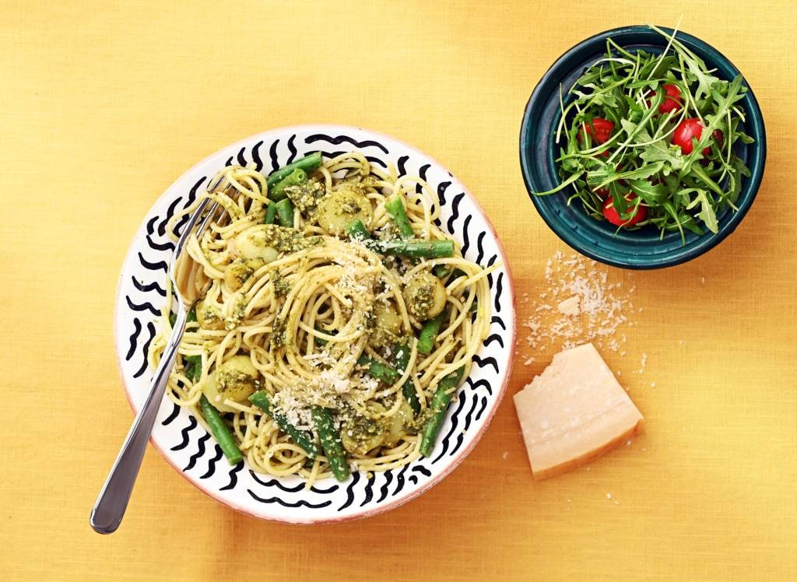

Spaghetti al pesto Genovese

Uitleg
Dit populaire pastagerecht heeft zijn oorsprong in Genua (Ligurië),Italië. Pesto bestaat uit de mooiste blaadjes van het basilicum, de lekkerste pijnboompitten, de beste olijfolie, Parmezaanse kaas, knoflook en soms boter.
Ingrediënten
- 150g krieltejs
- 300g sperziebonen
- 30g pijnboompitten
- 60g verser basilicum
- 1 teen knoflook
- 75ml olijfolie
- 300g spaghetti
- 40g parmezaanse kaas
- 15g pecorino romano
- 30g ongezouten roomboter
Stappen
- Breng een pan water aan de kook en kook de ongeschilde krieltjes ca. 10 min. Maak ondertussen de sperziebonen schoon, verwijder de steelaanzet en de puntjes en halveer ze. Giet de aardappelen af en spoel onder koud stromend water. Pel met een scherp mesje en snijd in dunne plakken.
- Maak ondertussen de pesto: verhit een koekenpan zonder olie of boter en rooster de pijnboompitten 3-4 min. op middelhoog vuur lichtbruin. Laat afkoelen op een bord. Haal de blaadjes van de takjes basilicum. Snijd de knoflook fijn. Maal de pijnboompitten, het basilicum, de knoflook en een ⅓ van het zout in een vijzel of de hoge beker van een staafmixer. Schenk alle olijfolie erbij en pureer tot een pesto.
- Breng een pan met ruim water en de rest van het zout aan de kook en kook de spaghetti volgens de aanwijzingen op de verpakking al dente. Kook de sperziebonen de laatste 6 min. mee.
- Schep de pesto in een kom. Rasp de kazen. Meng met de boter door de pesto.
- Giet de pasta en de sperziebonen af, bewaar 2-3 el van het kookvocht en meng door de pesto. Meng de pesto, aardappelplakjes en sperziebonen door de pasta. Breng verder op smaak met peper en eventueel zout. Serveer met extra Parmezaanse kaas.